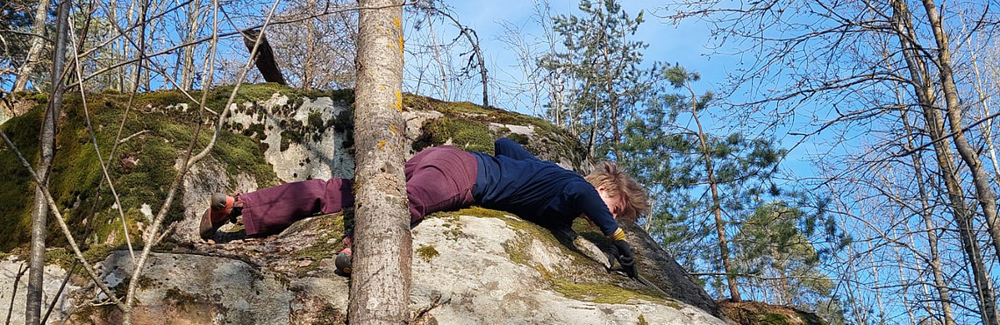
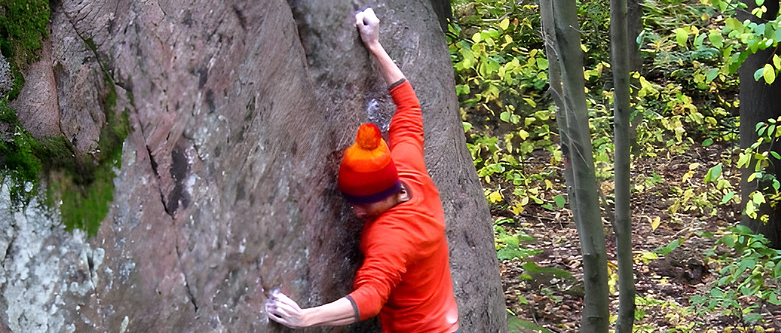
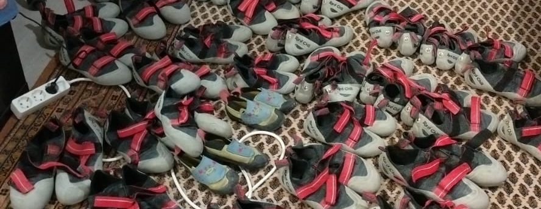
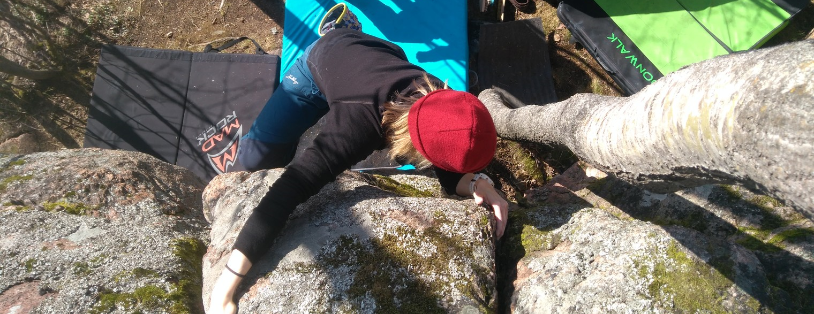

Uutisia ja blogipostauksia

vukry.com on nyt virallisesti julkaistu!
29.07.2025
Vihdoin ja viimein! Saimme juuri tuloja 27 Cragsilta ja yksi osa budjettia on tämän sivun julkaisu ja ylläpito. Eläköön VUK ry ja Vantaalainen kiipeily!

Hanskallion premium-topo on nyt julkaistu, KISALLA!
30.06.2025
Saimme juuri julkaistua tämän suurehkon projektin. Homma alkoi 2023 elokuussa, kun kävimme Joelin kanssa etsimässä uusia sijainteja korkeuskäyrien ja GTK:n kivikarttaa hyödyntämällä. Sijainti näytti olevan laadultaan vain okei, mutta Kasvot -sektorin nähtyämme molempien leuat tipahti maahan.
Sen jälkeen löytyi loputkin hienoista sektoreista ja tiesimme, että tämähän pitää kehittää pikaisesti! Aloitimme ensimmäiset kiipeilyt siinä elo-syyskuussa, mutta saimme aluksi kiivettyä vain parisen reittiä Ensimmäinen reitti oli Vantainebleau, jonka grade oli silloin 5+. Sen jälkeen saimme
kiivetty vain Otus Standin, myöskin 5+ ja myöhemmin Vilman kanssa Go Kitty! -reitin greidillä 6A+. Pikaisesti Vantainebleaun kiipeämisen jälkeen, tajusimme että suuri osa linjan otteista ja kivistä olivat löysiä. Tiputeltiin kiviä arviolta muutaman tonnin edestä, kunnes jäljelle ei jäänyt
mitään heiluvaa. Nyt toki reitti oli huomattavasti vaikeampi, ensimmäisten arvioiden mukaan 6C ->. Etenimme Joelin kanssa nopeasti projektissa, mutta reitin viimeinen liike (toppaus) jäi välistä.
Näiden muutaman session jälkeen olikin kausi niin kosteana ja lopuilla, että seuraavat kiipeilyt tapahtuisivat seuraavana vuonna. Mutta niin ei kuitenkaan käynytkään, sillä kehitimme ja julkaisimme vuonna 2024 viitisen cragia, joihin Hanskallio ei kuulunut. Vuonna 2025 Hanskallio kuitenkin
nousi ensisijaiseksi prioriteetiksi kiipeilyhommissa, ja nopeasti kasvanut tiimimme kävi ahkerasti hommiin. Kymmenisen session jälkeen Hanski alkoi muistuttaa valmista, ja nyt kesäkuun lopulla se saatiin julkaistua.
Päätimme Hanskallion topon julkaisua juhliaksemme pitää kisan! Kisa on rennoista sisäkiipeilykisoista tuttu Cuppi-mallinen. Voit käydä lukemassa säännöt täältä! Osallistu,
ja todista maailmalle kiipeilykykysi! Voit voittaa kisaan osallistumalla maineen ja kunnian lisäksi kiipeilyyn liittyviä hyvikkeitä! :)
Käy kurkkaamassa Hanskin topo!
EDIT (5.7.2025): Heikki Rajala sai juuri kiivettyä Vantainebleaun-projektin! Onneksi olkoon ensinousun puolesta, Heikki!

Julkaisimme juuri Martinkylän Högbergin premium-topon!
18.05.2025
Topotimme tämän suburbian klassikon laadukkaammaksi. Tämä cragi sisältää erään Vantaan hienoimmista (ja korkeimmista) reiteistä, Akita, 7C+:n. Käy kurkkaamassa topon uusi versio!

Saimme juuri valtavan lainakenkälahjoituksen!
13.05.2025
Huikean suuret kiitokset KiipeilyAreenan Oonalle tästä! Ilman häntä, emme olisi saaneet tätä aikaiseksi. Tämän lahjoituksen avulla voimme nyt tarjota kengättömille jäsenillemme ulkokiipeilymahdollisuuksia, sekä ulkokiipeilyn suhteen uusille ihmisille mahdollisuuden kokeilla lajia. Tämän lisäksi käytämme näitä kenkiä Vantaan NAP kanssa järjestettyyn ulkokiipeilytoimintaan, joka jatkuu samalla mallilla viime vuodesta. Kiitokset vielä Oona!

Julkaisimme juuri Ylästön premium-topon!
29.04.2025
Aaro löysi Ylästön vanhan Lyseo-topon, jonka puuttuneet reitit lisättiin Ylästön moderniin 27 Crags-topoon. Kuvasimme myös uudet topokuvat ja lisäsimme GPS-trailit. Julkaisimme uuden ja päivitetyn Ylästön topon premium-topona. Käy kurkkaamassa topon uusi versio!
Ensimmäiset uudet reitit kiivetty Hanskalliolle!
21.03.2025
Ensimmäinen kehitysreissu tehty, tällä kertaa sijainniksi valittiin Hanskallio. Sijainti sisältää paljon potentiaalia, joten kehittämisessä tulee menemään tovi. Kuitenkin voimme olettaa, että Hanskallio saadaan muutaman kuukauden sisään kiivettyä ja topo julkaistua!
Edit (31.03.2025): Useampi reissu heitetty Hanskalliolle. Kolmessa reissussa paikalle ilmaantui jopa 12 uutta reittiä. Pääsektori on muutamaa reittiä vaille valmis!
Vuoden 2025 ulkokiipeilykausi on nyt avattu!
07.03.2025
Viime vuoteen verrattuna saimme erittäin aikaisen startin ulkokauteen. Pihlajamäki oli täydellinen sijainti avata kausi nopean kuivumisensa takia. Pian siirrymme Vantaan puolelle kehittämään omia reittejä!

Vantaan Ulkokiipeilijät ry on virallisesti perustettu!
17.02.2025
Useampi vuosi toiminnan aloittamisesta, yhdistyksemme on vihdoin virallinen! Tarkemmat tiedot voit katsoa Patentti- ja Rekisterihallituksesta.